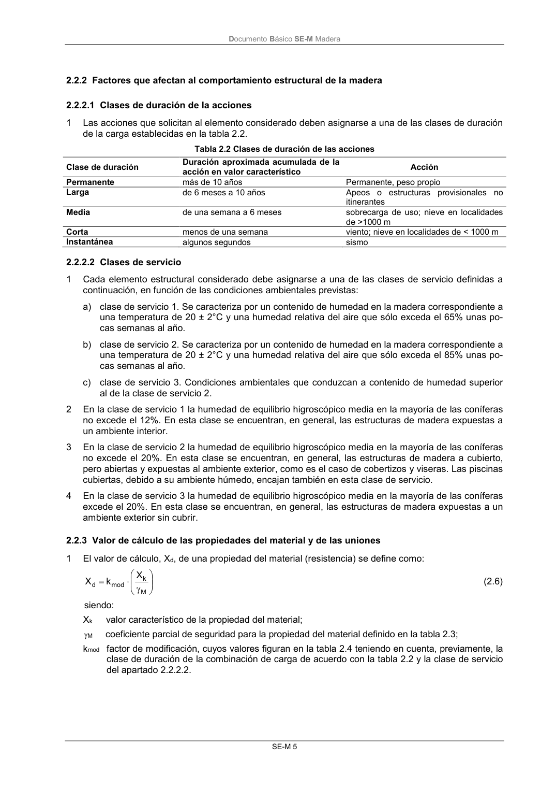

DB-SE-M Madera · edición 2019-12-20 · capa oficial
Documento DB-SE-M-oficial · SHA-256 del PDF 26b5819839ebfda78b0b119c5e76a0a37773b0d763c05688541870075df93718
Copia fiel del PDF fuente · Fuente oficial
Ficha de la disposición en la fuente oficial
Formatos: JSON del segmento · Markdown
2.2.2.2 Clases de servicio 1 Cada elemento estructural considerado debe asignarse a una de las clases de servicio definidas a continuación, en función de las condiciones ambientales previstas: a) clase de servicio 1. Se caracteriza por un contenido de humedad en la madera correspondiente a una temperatura de 20 ± 2°C y una humedad relativa del aire que sólo exceda el 65% unas po- cas semanas al año. b) clase de servicio 2. Se caracteriza por un contenido de humedad en la madera correspondiente a una temperatura de 20 ± 2°C y una humedad relativa del aire que sólo exceda el 85% unas po- cas semanas al año. c) clase de servicio 3. Condiciones ambientales que conduzcan a contenido de humedad superior al de la clase de servicio 2. 2 En la clase de servicio 1 la humedad de equilibrio higroscópico media en la mayoría de las coníferas no excede el 12%. En esta clase se encuentran, en general, las estructuras de madera expuestas a un ambiente interior. 3 En la clase de servicio 2 la humedad de equilibrio higroscópico media en la mayoría de las coníferas no excede el 20%. En esta clase se encuentran, en general, las estructuras de madera a cubierto, pero abiertas y expuestas al ambiente exterior, como es el caso de cobertizos y viseras. Las piscinas cubiertas, debido a su ambiente húmedo, encajan también en esta clase de servicio. 4 En la clase de servicio 3 la humedad de equilibrio higroscópico media en la mayoría de las coníferas excede el 20%. En esta clase se encuentran, en general, las estructuras de madera expuestas a un ambiente exterior sin cubrir.
